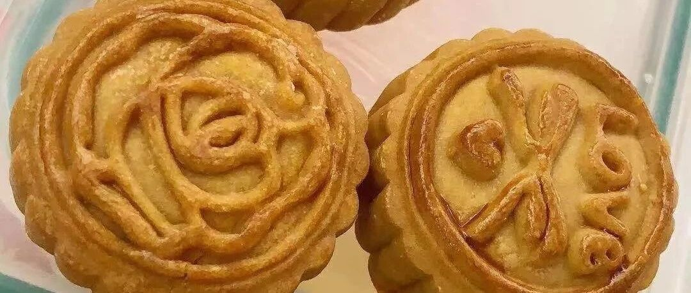

那里总是红和蓝 - 广式白莲蓉蛋黄月饼
开学那一天，总归是要下雨的。夏末南方的雨，一直让你猝不及防，好像夏天的长裙还没有穿完，就开始一层秋雨一层寒，细细密密的下一整晚，然后再下一整天，心里已经开始盘算是不是周一上班要翻出围巾带上，耳边又响起这首歌。
因为要给父母寄个大月饼，就做了双份。后来转念一想，要么试试做小的广式吧。恩，有时候，生活就需要一点那么随性。
材料和大月饼一样的。馅料我换了一下。
基本构造是：
饼皮20g+白莲蓉馅儿20g+蛋黄10g = 50g
饼皮
广式糖浆 75g
枧水 3g
花生油 20g
中筋粉 105g
馅料
咸蛋黄 80g （7-8个）
肉松 10g（没有就不加）
黄油 10g
白莲蓉馅儿 200g
步骤：以下基本和大月饼一样
饼皮
称好糖浆，加入枧水。注意枧水重量千万不能多，一多上色就很深，不好看。
用手动打蛋器搅打均匀，加入花生油，然后继续搅打均匀，能看出来乳化的状态不一样了。
加入中筋粉，用刮刀轻柔翻拌均匀，防止起筋。
后期可以带上手套，帮助成团。放在旁边，醒两小时。
我一般就去睡一觉，然后起来做馅儿。


馅料
称好咸蛋黄，铺锡纸，放入烤盘，180度，7分钟。注意：稍微有一点流油就可以了，不要烤过了。
不需要放凉，直接放入搅拌机，搅打均匀。加入肉松，继续搅打均匀。这时候蛋黄是松散的，肉松是基本看不到的。
注意：
a）如果是市场的鲜的咸蛋黄，会比较软，搅打就会糊在一起。所以买市售真空的就行。
b）如果没有搅拌机，趁热用勺子压也可以的，我觉得差别不大，但是咸蛋黄中间的芯儿，就会有点硬，实在按不散，就前面多称一点，直接自己吃了就行了。
从搅拌机中倒出，加入黄油。黄油的量非常关键，千万不要多了。黄油的状态也是关键，一定要室温软化。
用刮刀慢慢翻拌成团。差不多了就可以带着手套下手了。团成一个团子。
我没有把蛋黄团成团子，因为这次做的比较湿，都可以的，包的时候，跟饺子馅儿一样，用勺子就可以了。


白莲蓉分成20g一个的小团子。压平，然后包入咸蛋黄。慢慢收口。
将饼皮也分成20g一个的小团子，压平，包入白莲蓉，慢慢收口。
不要急，一点点收口就好的。我也遇到漏的情况，就注意收口的时候互相找补一下就可以的。
用50g的月饼模具。压花。我用了饼皮月饼的模具，随便吧，都一样。
180度 中层 5分钟，拿出来刷蛋黄水，然后继续烤15分钟。
常温放置2天，回油以后，再吃啊。。。


这个就不是一整个蛋黄，我一直认为，人到中年，对胆固醇，以及胆固醇的等同物就不要太过留恋和纠结。这样也不错的，吃个味儿就行。
以及，我还是挺嫌弃饼皮月饼的模具的，还是想买点传统的，好看的。
最后的最后，我订做了一个“水星”的苏式月饼印章，但是店家用了行楷，我想要隶书，于是，并不是很开心。。。。（所以这一段，我用了蓝色）
水星婆婆的月饼季